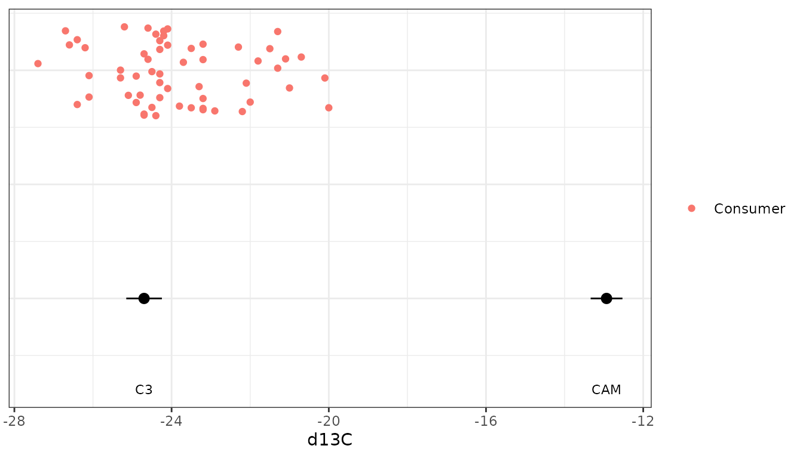
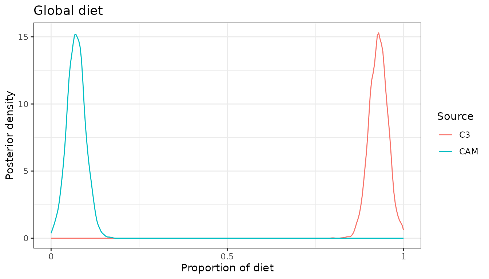
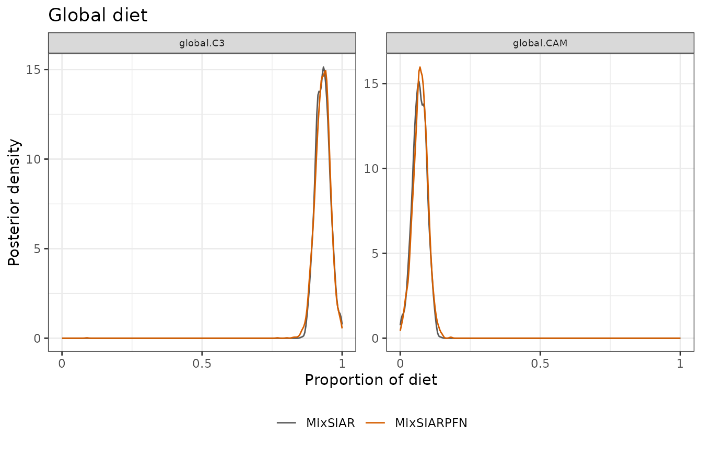
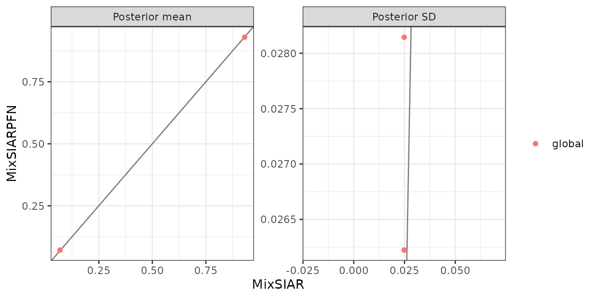

This follows MixSIAR’s snail example script
(mixsiar_script_snail.R), with data from Yanes et
al. (2013): land snails, one tracer (δ¹³C) and two food sources, C3 and
CAM plants, and no effects. Two things make it different from the other
examples: there is only one tracer, and the source data are raw samples
rather than means and SDs. Only the fitting call differs from MixSIAR’s
script: run_pfn() in place of
write_JAGS_model() and run_model().
The data
mix <- load_mix_data(
filename = system.file("extdata", "snail_consumer.csv", package = "MixSIARPFN"),
iso_names = "d13C", factors = NULL, fac_random = NULL,
fac_nested = NULL, cont_effects = NULL)
source <- load_source_data(
filename = system.file("extdata", "snail_sources.csv", package = "MixSIARPFN"),
source_factors = NULL, conc_dep = FALSE, data_type = "raw", mix)
#> Raw source data summarised to means, SDs and sample sizes (C3: n = 5; CAM: n = 3).
discr <- load_discr_data(
filename = system.file("extdata", "snail_discrimination.csv", package = "MixSIARPFN"),
mix)With data_type = "raw", load_source_data()
summarises each source’s samples to its mean, SD and sample size, which
is what MixSIARPFN’s networks use:
source$data
#> Source Meand13C SDd13C n
#> 1 C3 -25.70000 0.4527693 5
#> 2 CAM -13.93333 0.4041452 3There are 58 snails.
plot_data(mix = mix, source = source, discr = discr)
Fitting the model
Residual * Process error and MixSIAR’s uninformative Dirichlet prior, as in MixSIAR’s script.
time <- system.time(
fit <- run_pfn(mix, source, discr, alpha.prior = 1,
resid_err = TRUE, process_err = TRUE)
)
fit
#> MixSIARPFN fit (Residual * Process error), 2 sources, in 0.2 s
#> Marginal posteriors (no joint draws). Global diet:
#> source mean sd 2.5% 97.5%
#> C3 0.929 0.028 0.876 0.982
#> CAM 0.071 0.026 0.020 0.123
#> Use output_pfn() for every proportion and parameter.
#> Note: Consumer columns not used: Length.Results
out <- output_pfn(fit, mix, source,
output_options = list(summary_save = FALSE, plot_post_save_pdf = FALSE))
knitr::kable(round(summary_table(fit), 3))| Mean | SD | 2.5% | 5% | 25% | 50% | 75% | 95% | 97.5% | |
|---|---|---|---|---|---|---|---|---|---|
| Epsilon.1 | 13.695 | 4.242 | 4.673 | 5.913 | 10.675 | 14.277 | 17.254 | 19.459 | 19.730 |
| p.global.C3 | 0.929 | 0.028 | 0.876 | 0.886 | 0.912 | 0.930 | 0.947 | 0.973 | 0.982 |
| p.global.CAM | 0.071 | 0.026 | 0.020 | 0.028 | 0.054 | 0.071 | 0.089 | 0.114 | 0.123 |
out$plots$global
The snails’ diet is mostly C3 plants. With one tracer and two sources the diet is well identified: the consumers’ δ¹³C sits between the two sources, much closer to C3.
Comparison with MixSIAR
ref <- mixsiar_reference("snail")
ref_raw <- mixsiar_reference("snail_raw")
blocks <- "global"MixSIAR 3.1.12 fitted the same model to the same data with 3 chains of 300,000 iterations (burn-in 200,000, MixSIAR’s “long” run), which took 2 minutes (largest Gelman-Rubin diagnostic 1.012). MixSIARPFN took 0.3 seconds, about 390 times faster.
Means, SDs, 95% intervals and the Wasserstein-1 distance between the two posteriors (W1: how far, on average, one posterior’s mass has to move to match the other, on the proportion scale):
knitr::kable(data.frame(
quantity = cmp$name,
`MixSIARPFN mean` = round(cmp$pfn_mean, 3), `MixSIAR mean` = round(cmp$mixsiar_mean, 3),
`MixSIARPFN SD` = round(cmp$pfn_sd, 3), `MixSIAR SD` = round(cmp$mixsiar_sd, 3),
`MixSIARPFN 95% CI` = sprintf("%.2f to %.2f", cmp$pfn_q2.5, cmp$pfn_q97.5),
`MixSIAR 95% CI` = sprintf("%.2f to %.2f", cmp$mixsiar_q2.5, cmp$mixsiar_q97.5),
W1 = round(cmp$w1, 3), check.names = FALSE))| quantity | MixSIARPFN mean | MixSIAR mean | MixSIARPFN SD | MixSIAR SD | MixSIARPFN 95% CI | MixSIAR 95% CI | W1 |
|---|---|---|---|---|---|---|---|
| Epsilon.1 | 13.695 | 13.590 | 4.242 | 4.216 | 4.67 to 19.73 | 4.83 to 19.74 | NA |
| p.global.C3 | 0.929 | 0.931 | 0.028 | 0.025 | 0.88 to 0.98 | 0.88 to 0.98 | 0.002 |
| p.global.CAM | 0.071 | 0.069 | 0.026 | 0.025 | 0.02 to 0.12 | 0.02 to 0.12 | 0.002 |
for (b in blocks) print(plot_compare(fit, ref$draws, block = b))
plot_compare(fit, ref$draws, type = "means")
What this shows. MixSIARPFN’s diet proportions differ from MixSIAR’s by 0.002 on average (MixSIAR’s posterior SDs are about 0.02), the mean W1 between the two posteriors is 0.002, and the median ratio of their SDs is 1.09. The largest difference in a posterior mean is for p.global.CAM (0.071 against 0.069).
The source data here are raw samples, which MixSIARPFN summarises to each source’s mean, SD and sample size. MixSIAR’s own example fits the raw samples instead, estimating each source’s mean and variance in the model. That MixSIAR fit (6 minutes, largest Gelman-Rubin diagnostic 1.031) and MixSIAR’s fit to the summaries differ by 0.001 in posterior means on average, so summarising the sources changes little here. The comparison above is like for like: both methods fitted the same summaries.